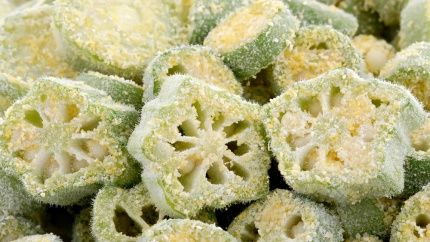
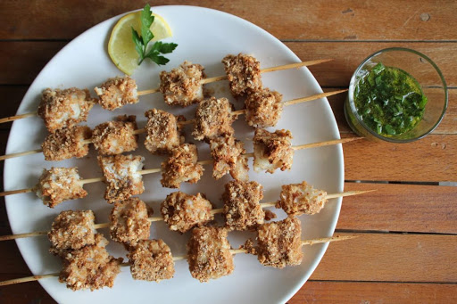
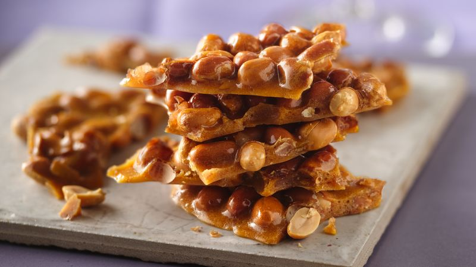
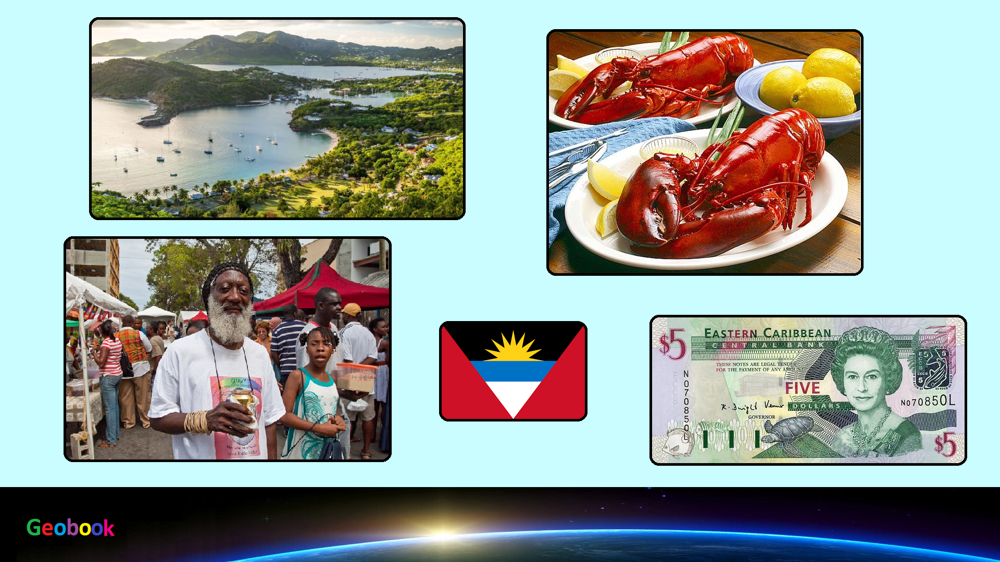

____
Традиционная еда
Фунжи (Fungie) — национальное блюдо кухни Антигуа и Барбуда, очень напоминающее итальянскую поленту, сделанную из кукурузной муки. Другое название фунжи – Ку-ку (Cou-cou).

Бульжольде из соленой трески (Saltfish buljolde) — вкусный традиционный карибский рецепт соленой трески, которую обычно подают с овощами.

Арахисовые леденцы (Peanut brittle) — Вкусная сладость из арахиса в серопе. Очень популярно в Антигуа и Барбуда.

Черный пудинг (Black pudding) — кровяная, хорошо выдержанная колбаса, приготовленная из риса, мяса и крови. Очень популярна среди местных жителей Антигуа и Барбуда.
")
____
